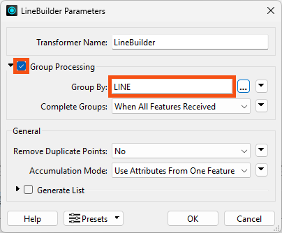

After completing this lesson, you'll be able to:
Another common use of coordinates is to build lines from a series of points. In this lesson, you'll learn how to use the LineBuilder transformer to create a line from points.
Start FME Workbench (2024.2 or later).
Repeat the steps from the previous exercises to read points from the new rapid_transit_line.csv file. Its coordinate system is also UTM83-10.
Add a LineBuilder transformer to the canvas, connecting it to either the CSV reader or the VertexCreator, depending on the method you chose to get the points.
In the LineBuilder parameters, enable Group Processing and set the Group By parameter to LINE. This tells the LineBuilder to stop connecting the points when the LINE attribute changes. This will result in three different lines in this example.
If your lines are not coming out as expected, you may be required to sort by a particular attribute to organize the data by using the Sorter.

Run the workspace and inspect the output.
The output of lines using any of the three methods and a LineBuilder transformer. Stylized in FME Data Inspector using map tiles by Stamen Design, under CC-BY-3.0. Data by OpenStreetMap, under CC-BY-SA.